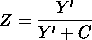

|
2.
Measurement Process Characterization
2.6. Case studies 2.6.5. Uncertainty analysis for extinguishing fire
|
|||
| Calibrated Values of Nitrogen Flowrate |
The flowrate is converted to nitrogen volume fraction (%),
Z, where
 |
||
| Values For New Flux Measurements |
Applying these formulas to the new flux measurements
results in the following table:
MEASURED PREDICTED
FLUX FLOW Z
======== ======== ========
26.00000 5.20568 34.23508
30.00000 5.97642 37.40776
27.00000 5.39967 35.06355
44.00000 8.56411 46.13260
16.00000 3.21774 24.34408
21.00000 4.22261 29.68942
14.00000 2.80968 21.93403
24.00000 4.81507 32.50115
22.00000 4.42097 30.65653
43.00000 8.38494 45.60766
41.00000 8.02400 44.51841
47.00000 9.09636 47.63400
45.00000 8.74240 46.64503
42.00000 8.20491 45.06975
14.00000 2.80968 21.93403
14.00000 2.80968 21.93403
32.00000 6.35656 38.86245
29.00000 5.78504 36.64890
47.00000 9.09636 47.63400
44.00000 8.56411 46.13260
47.00000 9.09636 47.63400
|
||